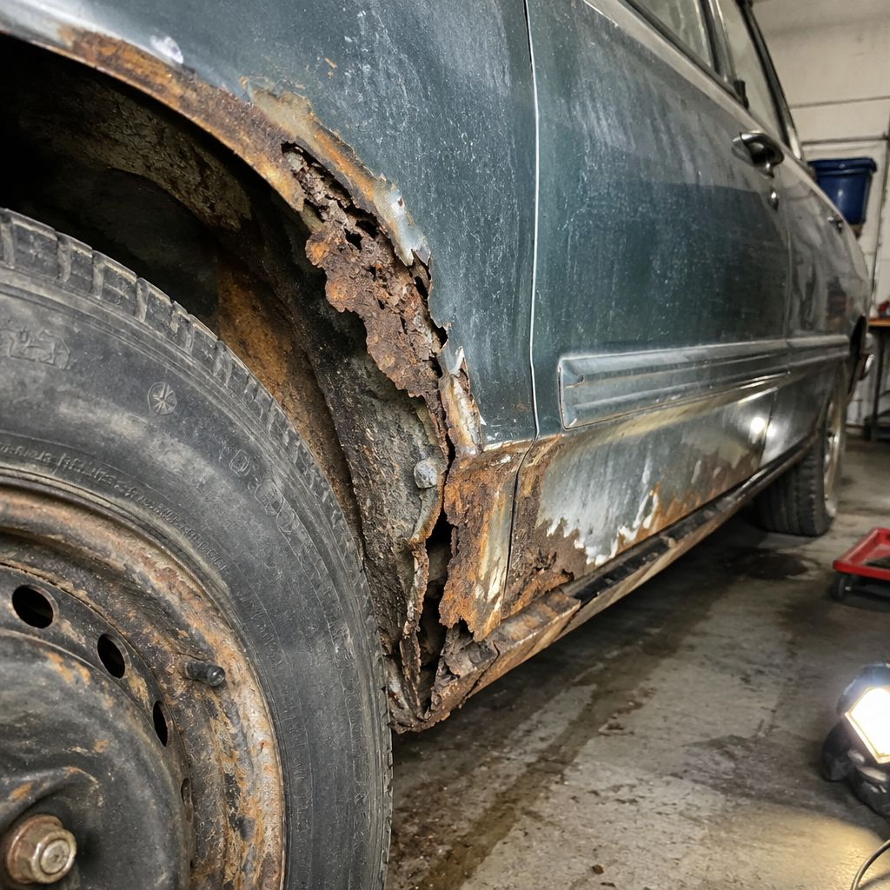
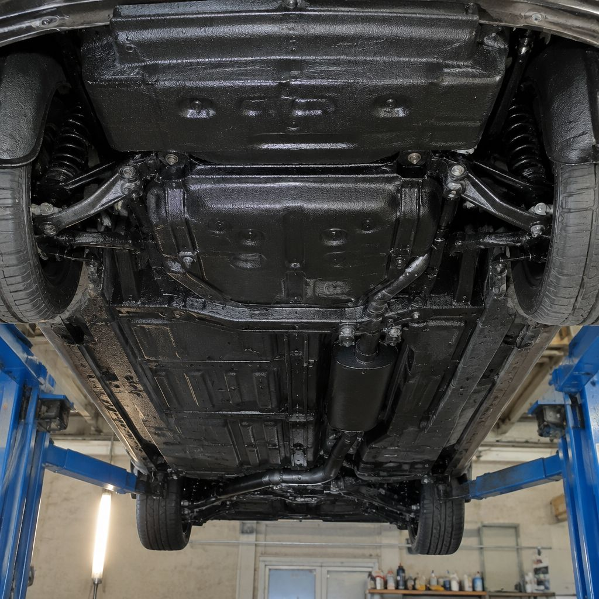
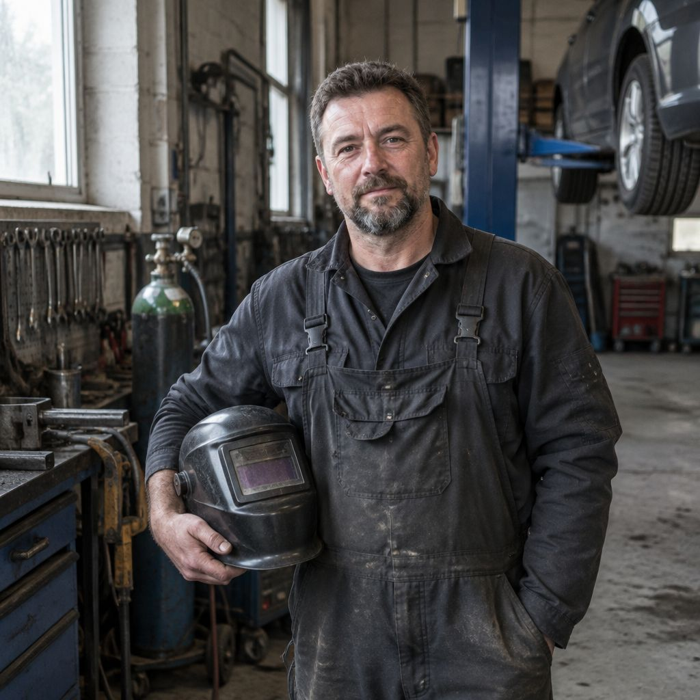

Работы
и фотоотчёты
Сварка, антикор, подготовка и покраска. Мы фотографируем каждый этап: что было под краской, что вырезали, что вварили, чем обработали. Так видно, за что вы платите.

Сварка, антикор, подготовка и покраска. Мы фотографируем каждый этап: что было под краской, что вырезали, что вварили, чем обработали. Так видно, за что вы платите.
Ниже типовые работы по нашим направлениям. Фотоотчёты по конкретным машинам присылаем в WhatsApp по запросу, чтобы не выкладывать чужие номера и салоны.






Общий вид и крупный план проблемной зоны. Видно, с чем приехала машина.
Что нашли под накладкой или краской. Здесь обычно и выясняется реальный объём.
Вырезанный участок, вваренная вставка, зачистка шва, нанесение состава.
Готовый вид и обработанные зоны. Плюс что проверить через месяц.
Никакой цепочки «менеджер, приёмщик, подрядчик». Обсуждаете работу и сдаёте машину одному человеку, он же варит, обрабатывает и готовит к покраске.
Это неудобно для большого сервиса, зато вы всегда знаете, кто отвечает за результат, и можете задать вопрос напрямую.
Сварка, антикор, кузов и покраска. Осмотр, смета, срок, фотоотчёт. Без «оставьте, мы позвоним».